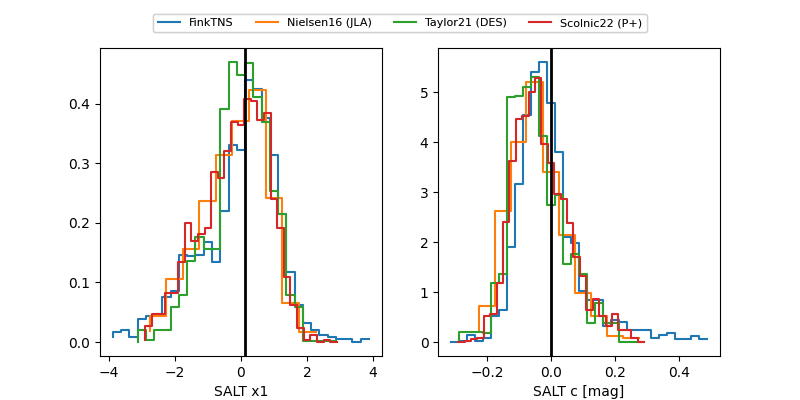

FINK: ZTF25abovcqg
Lasair: ZTF25abovcqg
ALeRCE: ZTF25abovcqg
TNS: 2025wxp
YSE: 2025wxp
ZTF25abovcqg (ztf,fink)
2025wxp (tns,yse)
PS25hio (panstarrs)
equatorial (ra, dec) = (257.4879,+32.29155)
galactic (l, b) = (55.0410,+34.46955)

last atlasc=19.25, atlaso=19.30, ps1::g=19.05, ps1::r=19.06, ps1::y=19.71, ztfg=19.13, ztfr=19.12
2 atlasc, 2 atlaso, 3 ps1::g, 3 ps1::r, 1 ps1::y, 4 ztfg, 2 ztfr detections